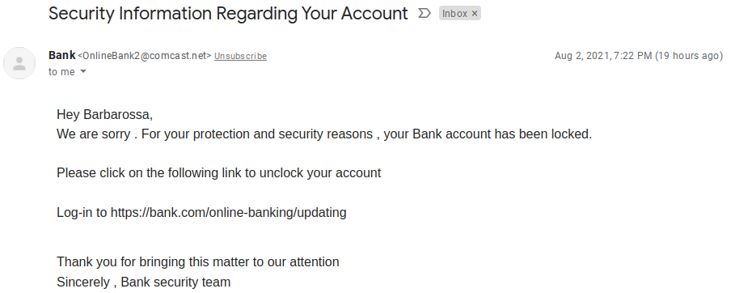
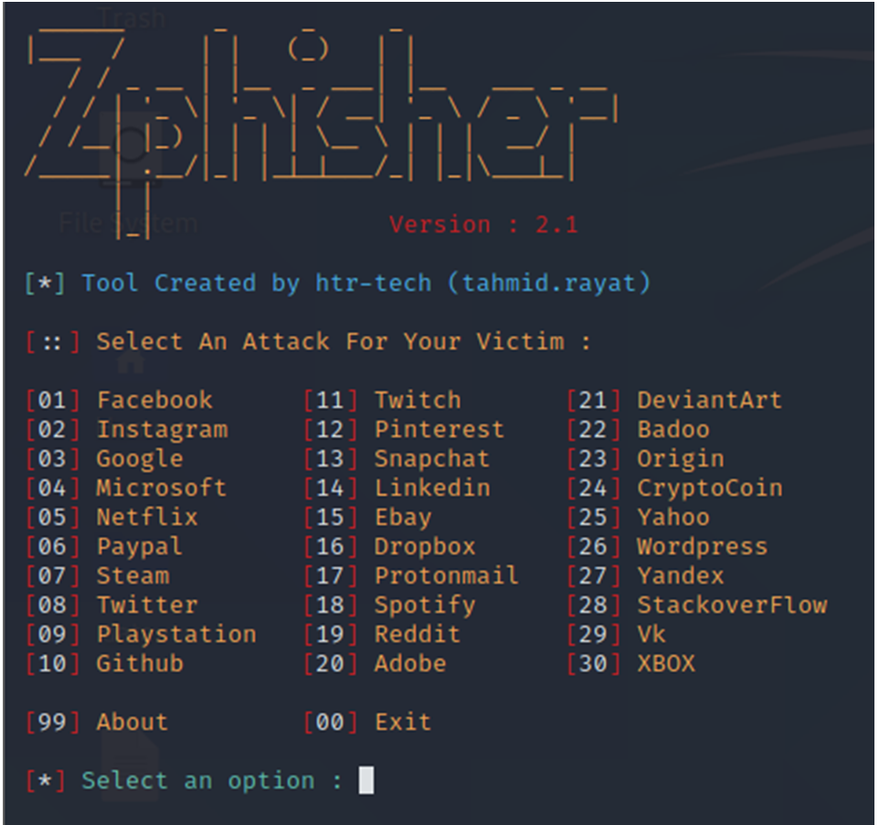
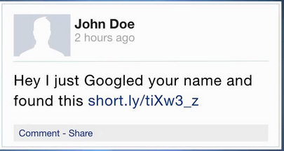

Phishing Attack . What is It, How Does It Work, And How to Defense Against It ?
Welcome again ! in this article we will talk about what is phishing attack ? what techniques that attackers use , with real world examples ..

Phishing attack
Happened when adversaries send victims emails containing malicious attachments or links , the goal is to execute malicious code on victim systems . According to the SANS Institute , 95 percent of all attacks on enterprise networks are the results of successful spear phishing
Let's mention the types of phishing attack :
Spear-phishing
Targeted and personalized to an individual , group , or organization instead of a wide random group of people. An example of it is an email from an online store about a recent purchase. It might include a link to a login page where the scammer simply harvests your credentials. An automated phone call or text message from your bank stating that your account may have been breached.
Spear phishing has another 2 types , let's talk about them : [Spear-phishing attachment , Spear-phishing Links]
Spearphishing Attachment
Is sending spearphishing emails with a malicious attachment in an attempt to gain access to victim systems. There are many options for the attachment such as Microsoft Office documents, executables, PDFs, or archived files , so when the end user open that attachment , the adversary's payload (malicious code) exploits a vulnerability found on that system , or make a reverse shell with the attacker . The form of text of this kind of spearphishing tries to give a reason why this file should be opened , an example of this is injecting a payload (malicious code) inside a PDF file that claimed it is a CV for an employee . Let me give you a bonus about advanced technique for this attack to evade an Anti-virus is to encrypt the attachment then let the user decrypt it , one simple example about this is to zip the PDF file then when the user unzip it , and open it , the firewall may not detect it .
A real world example for this attack is when APT12 sent emails with malicious Microsoft Office documents and PDFs attached. How this attack happened ? When the APT12 sent a phish email to a Taiwanese government ministry, attached to this email a malicious Microsoft Word document that exploits a remote code execution vulnerability exists in the Windows common controls when the end user open it.
What techniques used to do this type of attack ? There are many ways to do it , the easiest one is fake emails (e.g. your boss email is john@pobox.upenn.edu , so you make an email on upenn.edu with name john.pobox it'll be john.pobox@upenn.edu)
How to defend against this type of attack .. ? There are many solutions , deploying anti-virus on machines that support interact with external emails , using network intrusion prevention which scan and delete malicious email attachments , finally training users to identify social-engineering techniques and phishing emails
Spearphishing Link

For this type of attack , the malicious email contain links , this link requires the user to actively click or copy and paste a URL into a browser . The visited website may compromise the web browser using an exploit , or will prompt a box to download applications , documents , zip files , etc..
A real world example for this attack when BlackTech (cyber espionage group operating against targets in East Asia, particularly Taiwan, and occasionally, Japan and Hong Kong) has used spearphishing emails with links to cloud services to deliver malware.
What techniques used to do this attack ? zphisher is one of the best automated phishing tool with +30 templates with latest and updated login pages (Facebook , Twitter , Instagram , Twitch , yahoo , etc ..)

How to defend against it .. ? Using anti-spoofing and email authentication mechanisms to filter messages . Training users to identify spear-phishing emails with malicious links . Determining if the website can be used for spear-phishing are necessary business operation.
Now let's complete the other types of phishing
Voice phishing (vishing)
Using of phone calls to trick people into giving money or revealing personal information , its old name was telephone scams . Example : a phone call about a free offer or telling you that you've won a prize.
How this attack happened ? By using automated calls to steal confidential information .
Techniques ?
Make any call from a spoofed caller ID , which make the attack looks like it comes from a known number . Or use VOIP technology to make the calls [for example Skype]
How to defend against it ?
A) Do not enter your phone number into any online forums.
B) Never call back a number left via a Voicemail , alway contact the organization directly .
C) Use multi-factor authentication (MFA) on all online accounts.
Social media phish
Using of social media platforms [Facebook , Twitter , or Instagram] to steal personal data . Examples about this type are fake comments on popular posts. Or fake live-stream videos.
Techniques ?

Collect detailed information about the victim , preparing to attack according to information they have .
Whaling Phishing
Targeted executives and high profiles end users like CEOs , managers . Example about this attack : sending an email to a CEO requesting payment , pretending to be a client of the company .
Techniques ?
spending time profiling the target to find the oppurtune moment to steal login credentials .
How to defend against this attack
beaware of clicking links or attachments in emails .